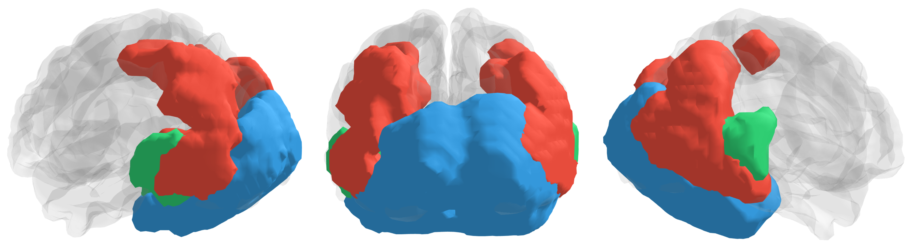

Multimodal neuroimaging
fMRI EEG fusion
When and where the brain represents emotion in visual scenes.
Combining fMRI and EEG to characterize the temporal and spatial representations of emotion in visual scenes.
Multimodal neuroimaging
When and where the brain represents emotion in visual scenes.
Combining fMRI and EEG to characterize the temporal and spatial representations of emotion in visual scenes.
Representations across the brain
Mapping visual features, scene representations, and emotion.

Drag to rotate. Use the view buttons to change perspective.
Searchlight analysis compares brain representations with visual features (GIST), scene features (CLIP-ViT), and emotion ratings (valence and arousal).